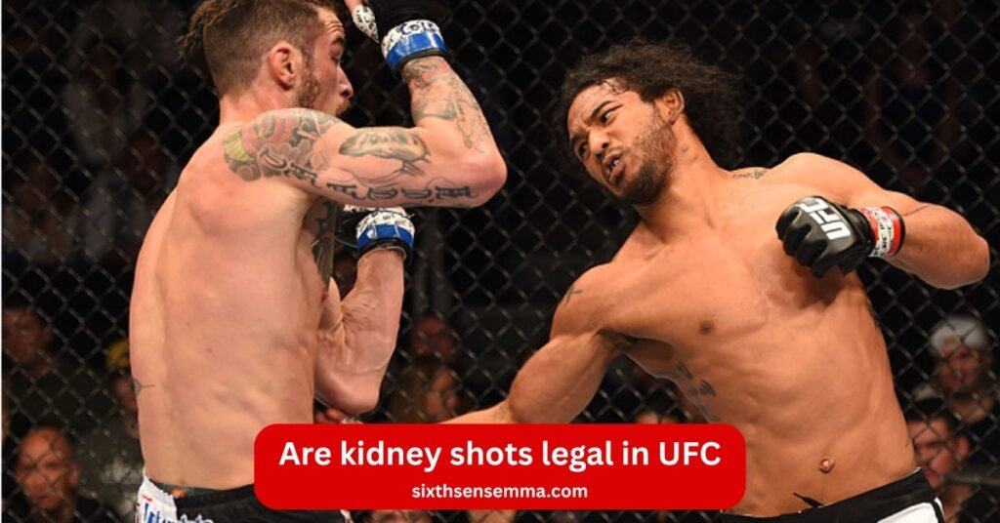

Are Kidney Shots Legal in UFC? Full Breakdown of Rules & Safety by Sixth Sense

Are kidney shots legal in UFC? This is the first question every new fan asks when they see a fighter dig a vicious body shot into the side and the opponent suddenly gasps for air like he just got hit by a truck. Many people think a kidney punch is always illegal because it’s banned in boxing but the UFC and MMA rules work differently. Under the Unified Rules a kidney shot that lands cleanly on the side or front of the opponent’s body is perfectly legal and used by almost every top fighter.
What Exactly Are Kidney Shots in MMA?
A kidney shot (also called kidney punch kidney strike or kidney blow) is any punch elbow knee heel kick or heel to the kidney that lands on or near the kidneys. The kidneys are located on both sides of the spine in the lower back just below the rib cage and inside the flank area. Unlike the liver which sits under the right side of the ribcage and has some protection from the front the kidneys have almost no natural armor from behind or the side. A clean hit there sends shock waves straight into the internal organ. It causes immediate sharp pain muscle spasms nausea and sometimes blood in urine later. In boxing and under the Queensbury Rules any kidney punch is illegal because the opponent’s back is turned most of the time and the risk of internal bleeding laceration contusion or even organ failure is too high.
Legal Kidney Strikes in UFC
In UFC a punch or kick to the kidney area is legal as long as it hits the side or front portion of the opponent’s body and not the spine or direct back. The Unified Rules forbid strikes to the back of the torso but the side kidney area is fair game. Many fighters throw a kidney shot during the clinch from an underhook after a takedown or when the opponent’s body is slightly turned.
Side Body Hooks
The classic side body hook to the left or right kidney region is a legal punch in UFC. Fighters dig hard hooks under the ribcage when the opponent stands square or turns a little. It hurts badly because the kidneys sit deep in the lower back and side. A clean body shot here makes legs weak fast.
Body Uppercuts to the Kidney Area
From the clinch or double underhooks short body uppercuts to the kidney area are common and fully legal in boxing or MMA rules when they land on the side. The punch drives upward into the soft flank area below the ribs. Even if the punch is unintentional and drifts a bit low as long as it is not straight to the spine the referee usually lets it go.
Clean Strikes from a Forward or Side Angle
Any punch elbow or knee that comes from the front of the body or pure side is a legal punch. Fighters often land these when the opponent squares up or circles. The state athletic commissions and referee only call foul if the strike clearly goes to the opponent’s back or spine.
Legal Kicks Targeting the Kidney Region
Kicks are also allowed. A low roundhouse to the body heel kick to the side or heel to the kidney from the side during stand up or ground exchanges is perfectly legal. In Muay Thai rules that influence MMA hard kicks to the kidney area are standard. The only time a kick becomes illegal is when the opponent’s back is turned and the heel or shin drives into the spine itself.
Benefits of Kidney Shot Rules in UFC
The Unified Rules that decide when a kidney shot kidney punch or any strike to the kidneys is legal or illegal bring real advantages to UFC and MMA. These clear lines around strikes to the back the kidney area lower back and flank area stop fighters from causing internal bleeding laceration contusion or serious internal organ damage. By making direct kidney strikes to the spine or opponent’s back deemed illegal the rules protect the kidneys and reduce the chance of organ failure while still letting fighters land hard perfectly legal body shots from the side or front. This balance keeps the sport tough but safer than old no holds barred days.
Helps Fighters Avoid Illegal Strikes & Penalties
When fighters know a punch elbow heel kick or heel to the kidney straight to the opponent’s back brings an instant warning point deduction or disqualification they train to aim only at the legal kidney area on the side. In the clinch takedown or stand up they stay disciplined and never throw a kidney shot when the back is turned. This awareness stops accidental fouls and keeps their record clean.
Improves Strategic Body Targeting During Fights
Legal side body hooks body uppercuts and kicks to the kidney region give fighters smart options beside head shots. A sharp kidney blow from an underhook or after turning the opponent’s body drains stamina fast without breaking rules. Fighters mix the kidney shot with liver shot solar plexus attacks and rib cage work to break opponents down slowly and legally.
Enhances Overall Fighter Safety & Awareness
Banning direct kidney punches to the spine or lower back lowers the risk of hidden internal organ injuries that can appear hours later. Fighters learn exact angles – front or side only – so the dangerous strike stays controlled. The referee and state athletic commissions can spot real fouls quickly and the punch is unintentional rule still protects honest mistakes.
Gives Fans Clear Insight Into Fight Decisions
Fans now understand why one body shot is praised while another brings a pause and deduction. When a kidney punch lands clean from the side it is a skillful move. When it hits the spine it is correctly called foul. This clarity stops confusion in boxing and MMA debates and helps everyone follow the Unified Rules better.
Builds Better Respect for MMA Rules and Referee Calls
Clear kidney shot rules show that UFC is a real sport with structure not chaos. Fighters coaches and fans respect the referee who stops a heel to the kidney on the spine or warns for repeated strikes to the back. Over time everyone accepts that protecting the opponent’s kidneys from the worst angles makes combat sports tougher fairer and more professional.
UFC Rules That Directly Affect Kidney Strikes
Every kidney shot kidney punch or strike to the kidneys in UFC falls under the Unified Rules of Mixed Martial Arts that all state athletic commissions follow. These rules decide if a punch elbow heel kick or knee to the kidney area lower back or flank area is perfectly legal or deemed illegal. The main line is simple: any body shot that lands on the side or front of the opponent’s body is allowed but direct strikes to the back of the torso especially the spine and opponent’s kidneys from behind are banned.
Unified Rules of Mixed Martial Arts
The Unified Rules clearly list strikes to the back of the head spine and kidneys as fouls. Rule 13 bans hitting the spine or the back of the torso at any time. The kidney area on the side remains open for legal attack because it is not considered the back. The same rules apply in MMA worldwide when a commission uses the Unified Rules.
List of Relevant Fouls
- Striking to the spine or back of the torso (includes direct kidney punch from behind)
- Heel to the kidney or any kick when the opponent’s back is turned toward the striker
- Repeated low blows that drift into the lower back or kidney region
- Any strike the referee judges as intentional to the opponent’s back after warning
A single hard foul can bring an immediate warning or point deduction. Repeated fouls lead to disqualification.
How Referees Judge Legal vs Illegal Strikes
| Situation | Strike Type | Referee Decision |
|---|---|---|
| Opponent facing you, body square or slightly turned | Kidney shot from the front or side | Legal — Fight continues |
| Side clinch or underhook position | Body punches landing on the kidney area | Legal — Clean body work |
| Strike lands on spine or center of the back | Punch, elbow, or heel kick | Illegal — Referee stops action |
| Opponent’s torso fully turned away | Any strike hitting back area | Illegal — Warning or point deduction |
| Unintentional strike slips to the back | Accidental punch or elbow | Illegal if repeated — Warning or deduction |
| Repeated contact to the back | Punches, elbows, kicks | Referee intervention — Can lead to ending the contest |
| Clean body shots avoiding spine | Hooks, uppercuts, legal kicks | Allowed — Safe and permitted in UFC/MMA |
Real UFC Examples of Kidney Shots
Over the years the kidney shot and kidney punch have created some of the most dramatic moments in UFC history. Fighters know a clean body shot to the kidney area or flank area can sap energy fast while a single illegal strike to the kidneys from the back can change a fight with a point deduction or stoppage. From perfectly legal side hooks in the clinch to accidental heel to the kidney on the ground these strikes show exactly where the Unified Rules draw the line between smart offense and foul.
Famous Legal Kidney Shots in Big Fights
At UFC 100 Dan Henderson landed crushing liver shot and kidney shot combos on Michael Bisping from the side during stand up all perfectly legal. In the clinch Cain Velasquez constantly dug short body uppercuts to the kidney region of Junior dos Santos. Tony Ferguson is famous for ripping left hooks deep into the lower back and kidney area from a slight side angle against Donald Cerrone and Kevin Lee. These hard but legal kidney and liver punches slowed opponents down and showed how a well placed punch to the side of the opponent’s body can break someone without ever touching the spine.
Moments When Fighters Were Penalized
Jon Jones lost a point against Matt Hamill at The Ultimate Fighter 10 Finale for repeated 12 6 elbows and borderline strikes to the back some landing near the kidney area. At UFC Fight Night 139 Yair Rodríguez was deducted a point after a clear heel kick to the kidneys when Chan Sung Jung’s back was turned on the ground. In 2022 Chris Curtis had a point taken when his short punch from the clinch drifted too far onto the spine and lower back of Rodolfo Vieira. Each time the referee saw the opponent’s back exposed and the strike land on the opponent’s kidneys or spine the deduction was instant. These examples remind every fighter that even one kidney blow from the wrong angle can cost the fight.
How Powerful Are Kidney Shots?
A clean kidney shot is one of the most painful body shots a fighter can take in UFC or MMA. Even when perfectly legal from the side or flank area the punch elbow or heel kick drives deep into soft tissue right over the kidneys. There is almost no muscle or bone protection there so the shock travels straight into the internal organ. Fighters who have eaten a hard kidney punch describe an instant wave of nausea burning pain that spreads through the lower back and legs that suddenly feel heavy. Unlike a liver shot that can end the fight in seconds a solid kidney blow usually does not drop the opponent right away but it starts a slow torture that gets worse every minute.
Impact on Stamina and Breathing
The kidneys filter blood and control fluid balance. A sharp kidney strike shocks the nerves and causes the whole torso to tighten up. Breathing becomes shallow because every deep breath pulls on the bruised kidney area. Within one or two rounds the fighter starts breathing through the mouth hands drop lower and movement slows. The pain radiates to the rib cage and solar plexus making it hard to stay active in the clinch or defend takedowns. Many fighters say the kidney punch hurts worse minutes after it lands than the second it hits.
How Kidney Shots Can Change Fight Momentum
A well timed kidney shot quietly steals the fight. The opponent looks fine from the outside but inside they are fighting two battles at once: the actual fight and the growing pain in the lower back. They stop circling as fast stop throwing hard kicks and start protecting the kidney region instead of the head. That small change opens up everything else. Suddenly the fighter who landed the kidney blow can walk forward land clean head shots or chain takedowns because the hurt opponent cannot explode or sprawl properly. In long fights one or two hard kidney and liver punches from the side can turn a close round into complete control without ever needing a knockout. The kidney shot does not always finish the fight but it often decides who wins it.
Contact Us
Have any questions about whether kidney shots are legal need a fight moment explained or want to talk UFC rules? Just send a message or give us a call – we reply fast and keep it simple!
Phone 469 972 7800
Email: info@sixthsensemma.com
Location: 817 S MacArthur Blvd #100 Coppell TX 75019 United States
Conclusion
So are kidney shots legal in UFC? Yes – but only when they land cleanly on the side or front of the body. A sharp kidney shot from the flank area a digging hook in the clinch or a hard kick to the kidney region is 100% allowed and used by almost every elite fighter to drain stamina and break their opponent down. The moment that same strike slides to the spine or the direct lower back it becomes illegal and can cost points or the entire fight. Now you know exactly why some body shots make fighters freeze in pain while the referee never blinks and why others get an instant warning. Next time you watch a UFC card you’ll spot every legal kidney punch and liver shot like a pro!
Follow Us on Social Media
Stay connected with Sixth Sense MMA through our social media channels. Follow us for class updates, training tips, and a closer look at our self defense community.
FAQ’s
Under the Unified Rules of MMA illegal shots in UFC include strikes to the back of the head spine or kidney area from behind groin strikes, eye pokes headbutts, throat strikes and heel kicks to the kidney. These are banned to protect fighters from severe injury with penalties ranging from warnings to disqualification.
Eye gouging is often considered the most illegal move in UFC due to its potential for permanent damage like blindness leading to immediate disqualification with no tolerance.
Paige VanZant, a former UFC strawweight fighter turned to OnlyFans after leaving the promotion in 2020. She has built a massive following there and earns significantly from the platform.
Francis Ngannou holds the record for the hardest punch in UFC history with 129 161 units on a PowerKube machine at the UFC Performance Institute. His knockouts back up the raw power.
No groin shots are not allowed in the UFC. They are classified as low blows under the Unified Rules resulting in a pause for recovery and potential point deductions if intentional.
Kidney shots are not entirely illegal in the UFC but depend on the angle. Strikes to the side or front of the kidney area are legal body shots while direct hits to the spine or back of the kidneys are fouled risking point deductions or disqualification.
Illegal shots in UFC include back of head strikes, spinal shots, kidney strikes from behind groin attacks and stomps or knees to a grounded opponent’s head. These prioritize fighter safety.
Yes liver shots are fully legal in the UFC. Targeting the right side under the ribcage with punches, kicks or knees is a common and effective tactic for knockouts.
No nut shots (groin strikes) are illegal in UFC and treated as low blows unless clearly accidental. Intentional ones can lead to disqualification.
Yes you can kidney punch in UFC if it targets the side or front as it’s a legal body strike that drains stamina. Punches directly to the back or spine are illegal.
Kidney shots are legal in UFC from the side or front angles allowing fighters to use them strategically. Strikes to the direct back of the kidneys or spine are illegal under the Unified Rules for safety.
Train with us in Coppell
The first class is free. Shorts, a t-shirt and a water bottle. We lend the rest.
Book a free class